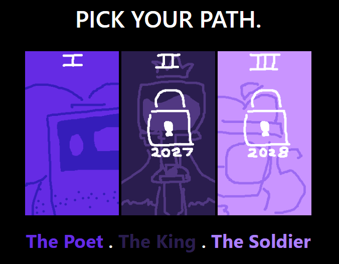

Tabby-Tammy
Tammy Tran's Portfolio
My final project for Art 74 of the Spring 2026 semester.

The original prompt was intended to be utilizing one of the mediums we explored
(or even a whole new medium) to exhibit digital media art under Mark Tribe's definition.
I personally enjoyed working with HTML, even if my knowledge of it is basic. So I have done
an choose your own adventure net art for it.
Following the same story as my final for art 15,
it explores a different perspective instead. I just like the idea of using the same story that I've
been personally working on for my art finals.